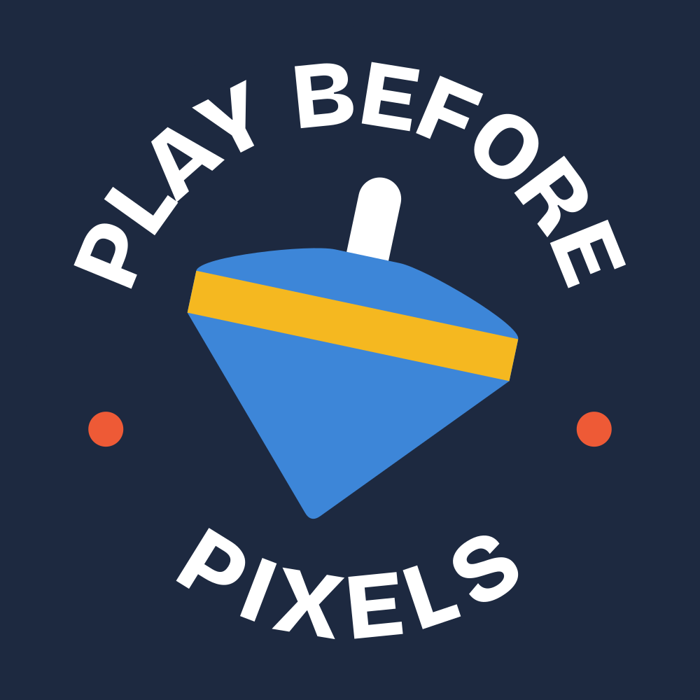

Play Before Pixels
Concept C · The Maker’s Seal · c-badge

Play Before Pixels@playbeforepixels
Up! Go! More!

Whose Lap Today?
The Day the Tablet Slept
Under 40 mm, embroider the small seal
Concept C · The Maker’s Seal · c-badge
